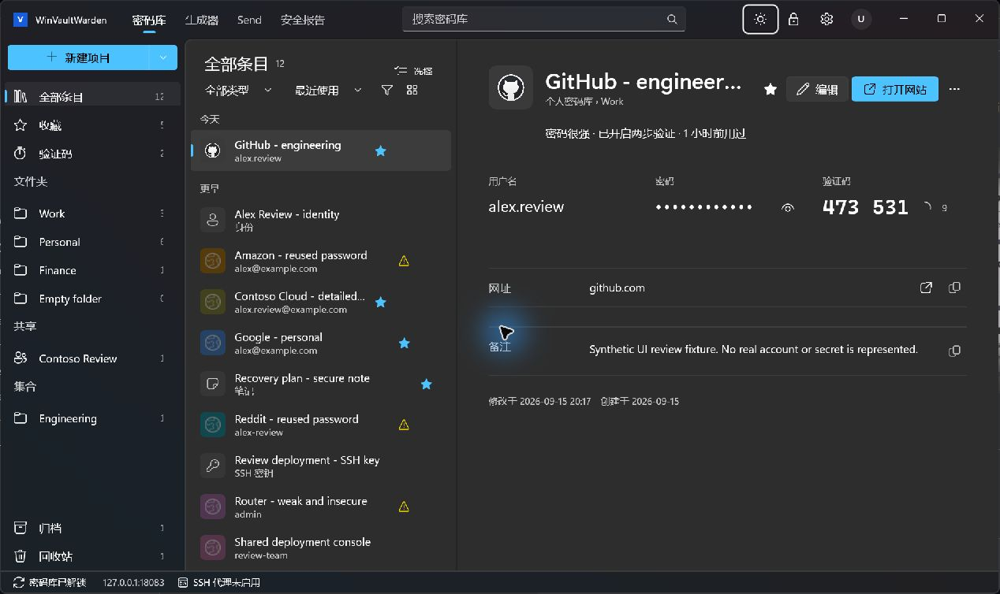
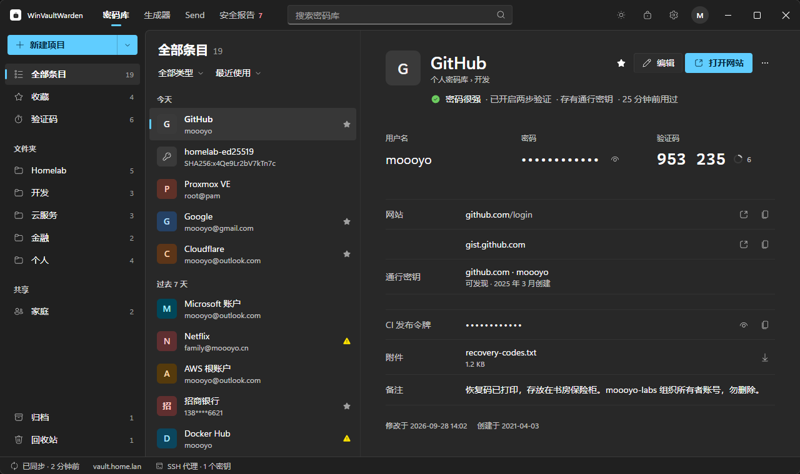

Release Final Vault Dark
Release release · dark · capture 1268 × 754 px

Final Release AOT executable from production source 47197b31341808d9a7c1be28d0fb326de21684b6. Real isolated fixture vault, application icon and TOTP rendered. Capture is 1268 x 754; exact client size was not asserted.